Notre littoral est un écosystème fragile. Il existe de nombreux paramètres qui jouent sur son équilibre.
Tu vas à présent incarner un citoyen de ce littoral qui cherche à comprendre les enjeux de son territoire.
Pour t’aider dans ta quète, les scientifiques du projet COSELMAR seront là pour t’informer,
grâce aux recherches qu’ils ont effectué pendant plusieurs années.
Alors, prêt à faire cohabiter l’homme et l’océan ?
Les poissons sont nos amis … mais c’est quand même pas mal en papillote ou accompagné d’un beurre blanc.
Choisis un type de bateau et projette toi en 2050 pour découvrir comment la biomasse et le butin de pêche auront évolué.
 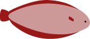
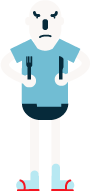
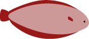
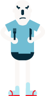
Moyens bateaux
(entre 12m et 18m)
Grands bateaux
(Plus de 18m)
Petits et grands bateaux
Flotte complète
Panique à la plage ! Un monstre d’algues puantes et radioactives est en train d’envahir toute la côte.
Choisis entre la famille de touriste, l’agriculteur et le scientifique pour voir comment vont ils interagir avec le monstre d’algues
 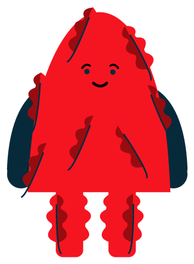
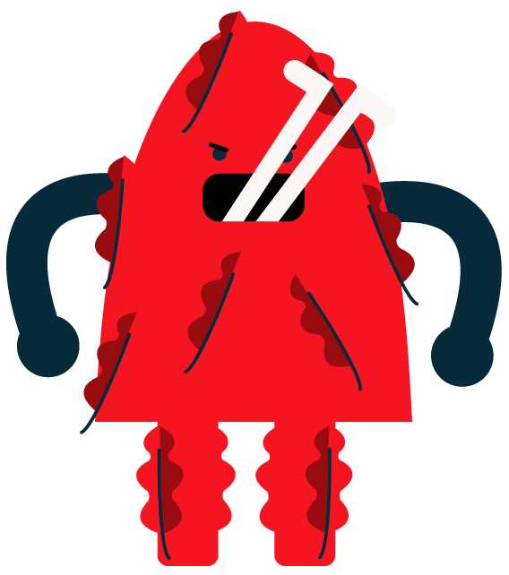
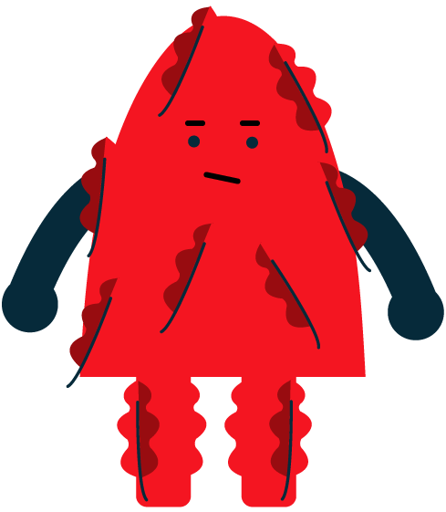
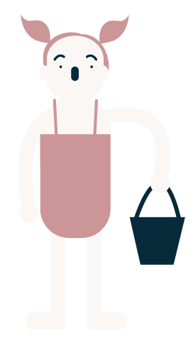
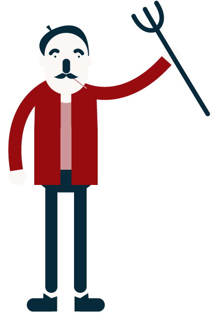
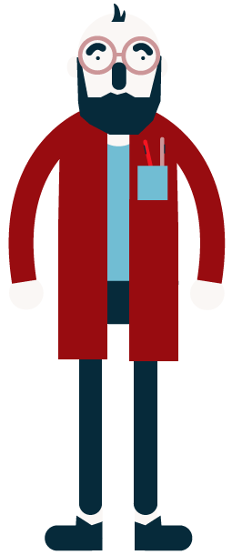
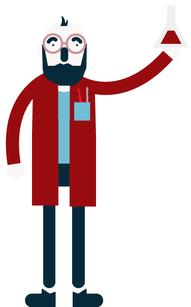
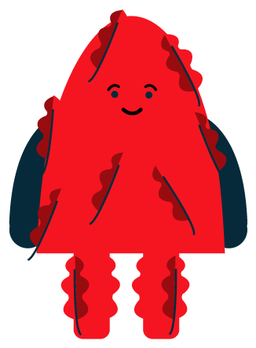
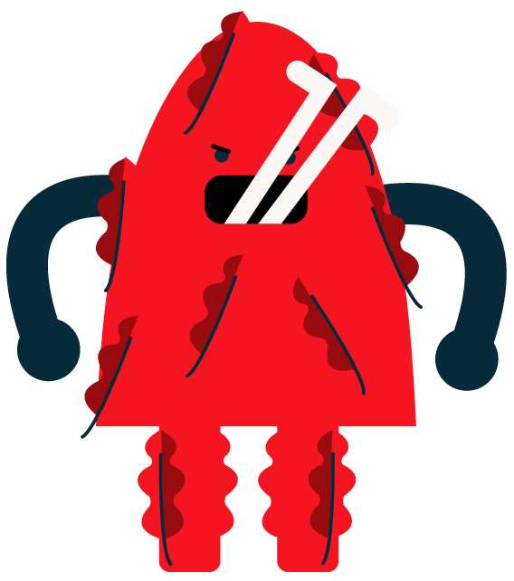
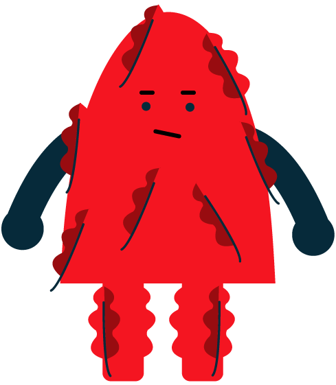
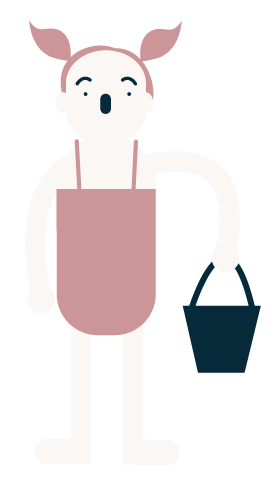
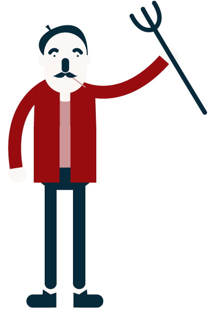
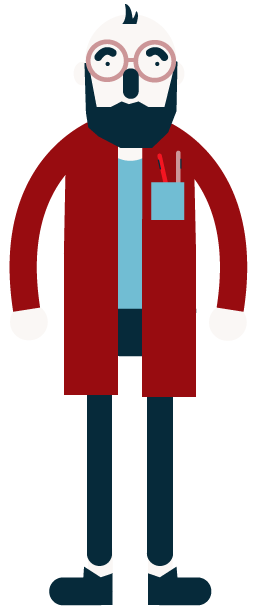
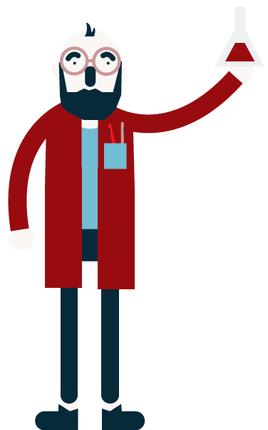
Touristes
Agriculteur
Scientifique
Qui n’a pas déjà rêvé de tremper ses orteils dans l’océan directement depuis son jardin, tout en regardant le soleil rouge disparaître dans les flots ?
Habiter en bord de mer n’est pas forcément de tout repos et peut même être dangereux dans certains cas.
Ajuste les deux curseurs : Le premier pour régler la hauteur de la digue, et le second pour placer les habitations.
Le budget n’est pas illimité, à toi de trouver le juste milieu pour que tout le monde puisse vivre sereinement.
Une fois décidé, clique sur le bouton GO! et vois ce qu’il se passe.
 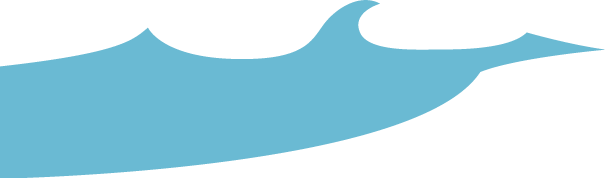
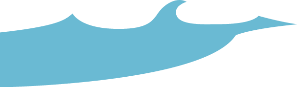
 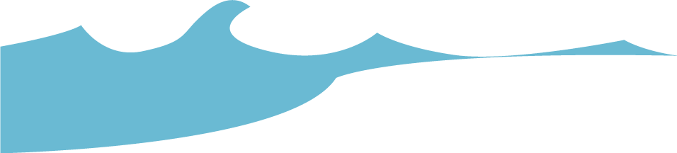
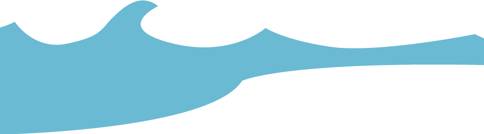
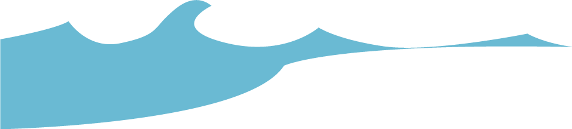
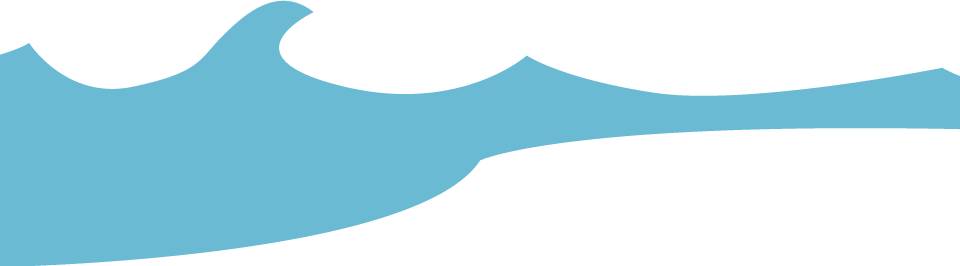
Hauteur de la digue
Nombre d'habitation

Léa Chérel
Germain Durand
Yéléna Pasquier
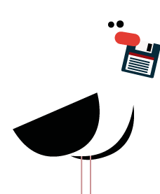Thomas Depoorter
Landry Descamps
Tanguy Le Berre
Jingsong Zhao
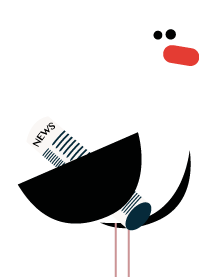Louiz Grall-Vigneron
Isabelle Perrot
Victor Tesson
avec l'aide de Jérôme Fihey
alias Monsieur Crabe
* paroles de la chanson de Renaud, Dès que le vent soufflera
Retour au jeu
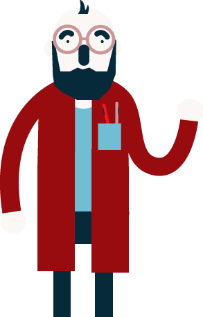
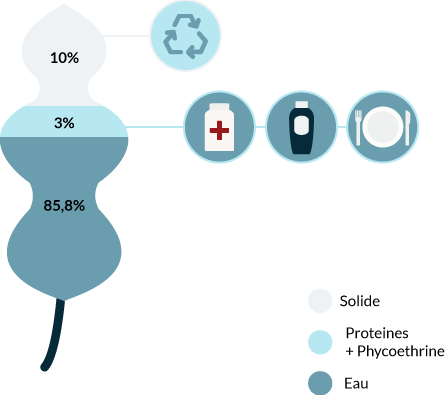
 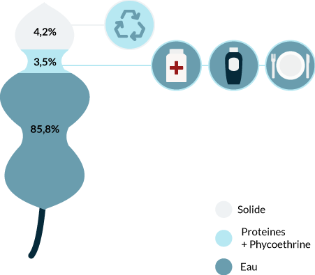
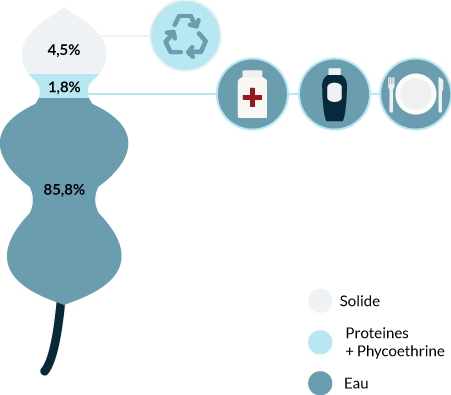
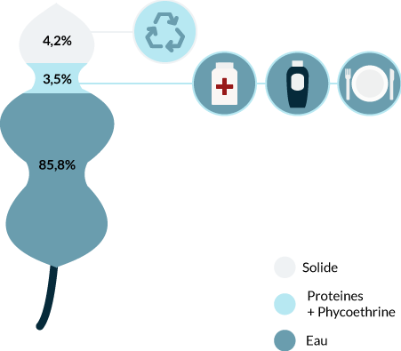
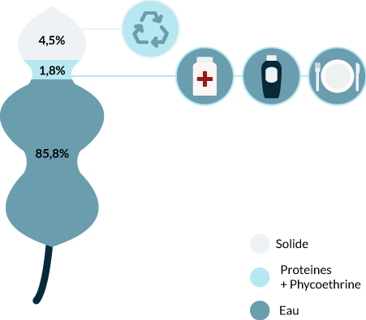
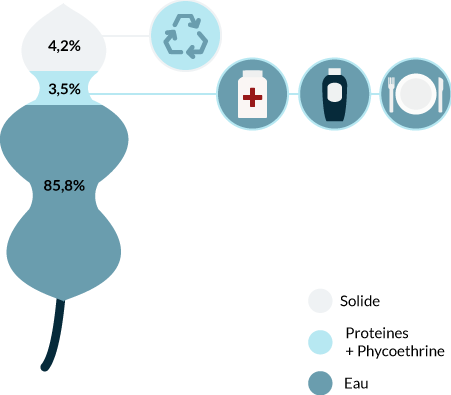
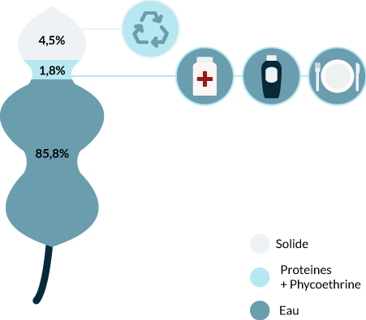
La vulnérabilité des Habitats
Au fil des années, l’augmentation de la population sur le littoral a accru les risques liés à la montée des eaux. Contrairement à ce que l’on peut croire, habiter près de la digue n’offre pas nécessairement une plus grande sécurité. Une vague peut toujours dépasser la digue quelle que soit sa taille et si les maisons se trouvent à proximité elles seront également submergées. C’est une des raisons pour lesquelles la tempête Xynthia de 2010 a fait autant de dégât
 Retour au jeu
Retour au jeu